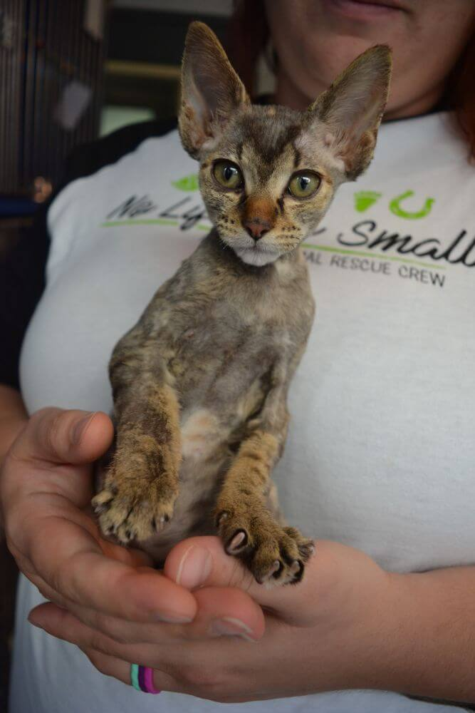

The act of volunteering is a selfless one, allowing us to gain new skills, new friends, and a new perspective. It has been said that volunteering is not for the faint of heart. It requires dedication, reliability, learning, and commitment. When you volunteer, you give part of yourself: your time, your energy, and your skills.
Volunteer Requirements
- A love for animals, and their well being
- Minimum one year commitment
- Commitment of two shifts per month during first year
- Completed Police Check if applicable
- Have an open mind and a willingness to learn
"Faint of heart" - lacking the courage to face something difficult or dangerous —usually used in the phrase not for the faint of heart.